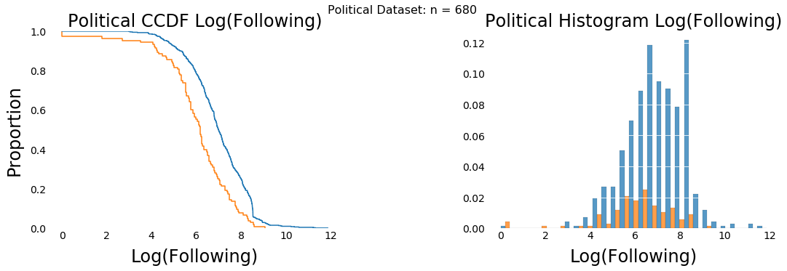
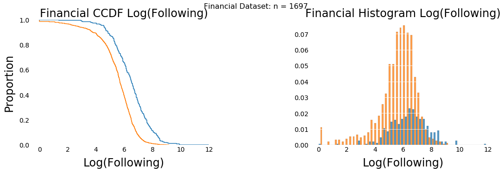
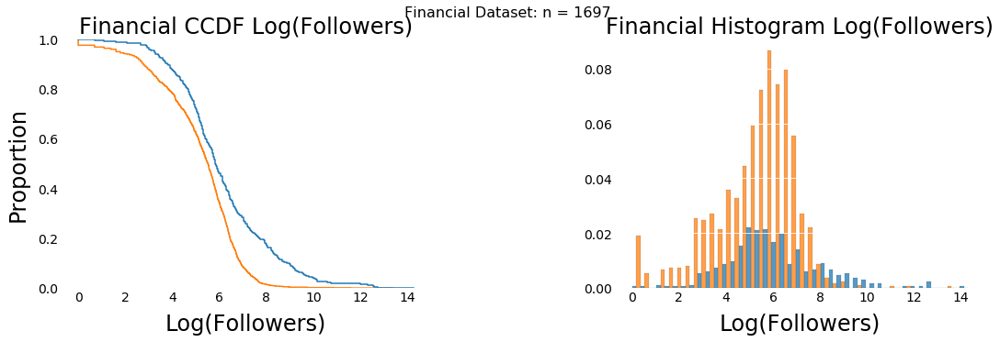
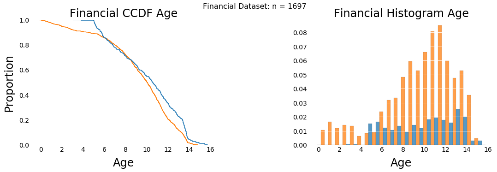

Plots and Results for my Thesis
On this page I am displaying and discussing some of the key results in visualizations!
Phishing scams are a billion-dollar problem. According to Threatpost, in 2020, business email compromise phishing attacks cost the US economy $ 1.8 billion. Social media phishing scams are also on the rise with 74% of companies experiencing social media attacks in 2021 according to Proofpoint. Educating users about phishing scams is an effective strategy for reducing phishing attacks. Despite efforts to combat phishing, the number of attacks continues to rise, likely indicative of a reticence of users to change online behaviors. Existing research into predicting vulnerable social media users that are susceptible to phishing mostly focuses on content analysis of their posts or the users they interact with, and not their behaviors. In contrast, in this research, we study the online behaviors of social media users on Twitter to identify those that are susceptible to phishing attacks. Specifically, we analyzed the behaviors of social media users that succumb to phishing scams in comparison to a control group of users that did not, to identify behavioral patterns that distinguish them. Online actions encompass aspects such as liking and sharing habits, the nature of posts, duration of engagement in posting activities, among others. More details about the data, results, and discussions can be found in the published thesis. (Link to come!)
Overview of the Data
Our dataset of susceptible users was provided by authors studying both political and financial social media manipulation. In the next two sections we describe these datasets and the respective control datasets we generated. We then collected 11 control posts and the users who interacted with them.
These two scatter plots represent the age vs. log of the number of followers for the political and financial datasets. At first glance, the scatter plots, as seen in these plots, do not show a significant difference between the susceptible and control groups. However, looking more closely at the scatter plots for log followers versus age, we can see there are a few susceptible users with lower numbers of log followers and age than the control group.
We also see a potential cluster of control users with a higher number of log followers and older accounts. The control observation is more significant in the plot for the political dataset and the susceptible observation is more significant in the financial dataset plot. These plots provided us with a reson to further investigate these variables.
Page Metric Analysis
Here we use CCDF and histograms of the page metrics in order to understand if there is a difference between the control and susceptible users.


When we look at the log of the following for the susceptible compared to the control users for both datasets, we see the susceptible users tend to follow less accounts.

While it is less noticable of a difference, we can see the susceptible users also tend to have less followers than the control accounts.

Finally, we can see the susceptible accounts tend to be younger. However, this is most noticible in the histogram plots. The tails show the youngest accounts tend to be susceptible users, while the older accounts tend to be control users.
Behavioral Metric Analysis
We used a tool called BLOC which allowed us to better understand users posting habits. One way we analyzed this data was to plot it using Principal Componant Analysis. PCA allows us to take multiple variables, in our case BLOC words, reduces the dimensionality, and transforms them into two principal component variables. In both plots we see significant overlapping for the susceptible and control users. Both datasets received an explained variance of 17% which means these plots are not very good.
When we plotted both datasets together, due to the shrinking of the dataset, to see if having more data would produce better results. Here we can see there is still a lot of overlap, but it is still a better representation of the data. The explained variance for both datasets is 19%. This shows with more data we coould possibly have better and a more deffinitive understanding of how posting habits are different between susceptible and control users.